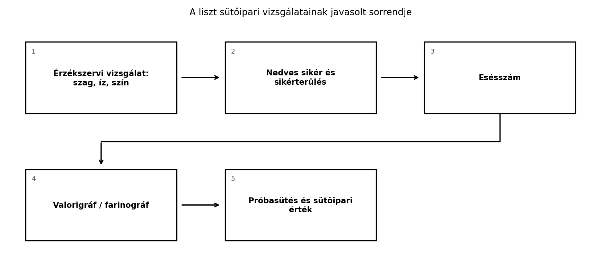
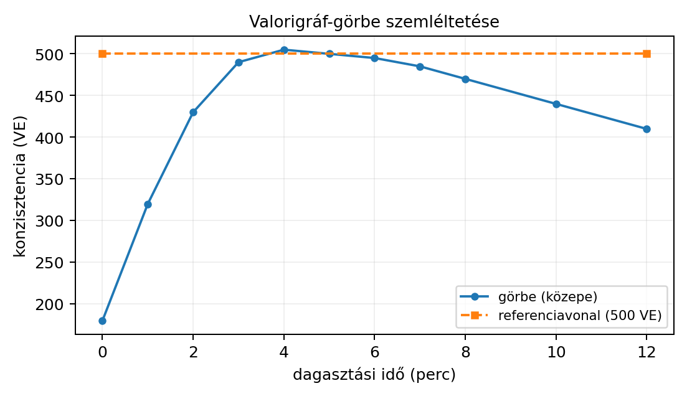

A lisztvizsgálatok nem öncélú laboratóriumi játékok: a pék akkor tudja előre, hogy az aznapi lisztből milyen kenyér vagy péksütemény lesz, ha néhány jól megválasztott mérést maga is elvégez. A beszállítói minőségi adatlap fontos, de nem helyettesíti az üzemi ellenőrzést, mert a liszt a szállítás és a tárolás során is változhat. Ha a pék ismeri a liszt sikértartalmát, enzimaktivitását és vízfelvevő képességét, akkor a receptet és a technológiát időben hozzá tudja igazítani, nem pedig a sütés után szembesül a lapos kenyérrel vagy a ragadós bélzettel.
A lisztvizsgálatokat érdemes úgy felépíteni, mint egy szűrősort: először a gyors, egyszerű érzékszervi vizsgálatot végezzük el, majd a fizikai és reológiai méréseket, végül a legbonyolultabb próbasütést. Az alábbi séma ezt a gondolatmenetet mutatja.

Az érzékszervi vizsgálat azonnal kizárhatja a nyilvánvalóan romlott vagy idegen szagú lisztet. A nedves sikér vizsgálata a búzaliszt „vázát” adó fehérjehálózat mennyiségét és minőségét mutatja. Az esésszám a keményítőbontó enzimek aktivitását jellemzi, a valorigráf pedig a tészta reológiai viselkedését és a vízfelvevő képességet méri. Végül a próbasütés adja meg a legbiztosabb választ arra, hogy a lisztből milyen késztermék lesz; ez utóbbit részletesen a Próbasütés, térfogat, fajlagos térfogat és alaki hányados alfejezetben tárgyaljuk.
A laboratóriumi munkához itt is érvényesek a korábban tanult szabályok: a mérleget ellenőrizzük, tárázzuk, az eszközök tiszták, a mérési eredményeket pedig azonnal feljegyezzük. A tömeg- és hőmérsékletmérés alapjait a Tömegmérés, mérlegek és hőmérsékletmérés, a liszt technológiai fogalmait pedig az A liszt technológiai tulajdonságai alfejezet tartalmazza.
Definíció. A nedves sikér a búzalisztből vízzel kimosható, rugalmas, nyúlós fehérjetömeg. Tömegét a bemért liszt tömegére vetítve, tömegszázalékban adjuk meg. A nedves sikér nagy része víz, emellett elsősorban a glutenin és a gliadin fehérjék alkotják.
Definíció. A sikérterülés annak a mérőszáma, hogy a nedves sikérgolyó adott hőmérsékleten, adott idő alatt mennyire terül szét. A kisebb terülés erős, rugalmas, formatartó sikért jelent; a nagyobb terülés gyenge, lágy sikért jelez.
Definíció. Az esésszám (más néven Hagberg-féle esésszám) azt méri, hogy a liszt és víz bekevert szuszpenziója forró vízfürdőben, a keményítő elcsirizesedése után milyen gyorsan engedi le a keverőrudat. Az eredményt másodpercben adjuk meg. Minél alacsonyabb az érték, annál erősebb a keményítőbontó enzimek aktivitása.
Definíció. A valorigráf (a gyakorlatban gyakran a farinográffal együtt említett) olyan mérőműszer, amely a tészta dagasztása közben folyamatosan regisztrálja a dagasztási ellenállást, az ún. konzisztenciát. A görbéből leolvasható a liszt vízfelvevő képessége, a tészta kialakulási ideje, stabilitása és ellágyulása.
Definíció. A Pekár-módszer egyszerű, összehasonlító lisztszín-vizsgálat: a vizsgált és a viszonyító lisztet száraz állapotban, egymás mellé a próbalapra helyezzük, simítóval tömör, sima felületűre nyomjuk, majd a lapot ferdén vízbe mártjuk; a nedvesített (és szükség esetén megszárított) felületen értékeljük a színárnyalatot, az egyenletességet és a korpaszemcsék mennyiségét (ellenőrizendő: módszerleírás).
A búzaliszt minőségének egyik legismertebb mutatója a nedves sikér mennyisége és minősége. A módszer elve az, hogy a lisztből vízzel tésztát gyúrunk, majd a keményítőt és az oldható anyagokat vízzel, illetve híg sóoldattal kimossuk. A visszamaradó rugalmas, összefüggő anyag a sikér. A vizsgálat elvégezhető kézzel, de nagyobb laboratóriumokban automata sikérmosó készüléket is használnak.
Gyakorlat. A kézi sikérkimosás lépései a következők:
A nedves sikér százalékos mennyiségét a következő képlettel számítjuk:
ahol a kimosott nedves sikér tömege, a bemért liszt tömege, mindkettő grammban.
A sikér minőségét a kimosott sikérgolyó tapintása és a sikérterülés mérése adja. A jó minőségű búzasikér világos, enyhén sárgás színű, rugalmas, jól nyújtható, nem ragadós. A gyenge sikér szürkés, lágy, könnyen szakad, vagy éppen ragacsos.
Szabály. A sikérterülés méréséhez a kimosott nedves sikérből formáljunk golyót, helyezzük üveglapra, és tegyük 30 °C-os termosztátba 60 percre. Az idő letelte után mérjük meg a szétterült sikér átmérőjét milliméterben. A pontos hőmérséklet és idő a vizsgálati szabványtól függ (ellenőrizendő).
Az alábbi képsor a kimosást és a terülésmérést együtt mutatja. Az 1. kocka a bemérés (1. lépés), a 2. a gyúrás és a pihentetés (2–3. lépés), a 3. a kimosás a csap alatt (4. lépés), a 4. a tisztavizes próba (5. lépés), az 5. a kinyomkodás és a mérés (6. lépés), a 6. a sikérterülés a Szabály szerint. Az alsó sor a jó és a gyenge sikér megjelenését veti össze.
A 3. kockán a szitára figyeljünk: a mosás közben leváló kis sikérdarabkákat a szita fogja fel, ezeket visszagyúrjuk a golyóba, különben a sikértartalom kisebbnek adódik. Az 5. kocka példájában 25 g lisztből 7,5 g nedves sikér marad, így (tanulási példa). A kis terülés erős, a nagy terülés gyenge sikérre utal. A HTML-kiadásban a lépések egyenként lejátszhatók.
Az esésszám-mérő (Hagberg–Perten készülék) azt vizsgálja, hogy a lisztben lévő alfa-amiláz enzim milyen erősen bontja a keményítőt. A módszer elve: a lisztből és vízből készített híg szuszpenziót forró vízfürdőbe helyezzük. A hő hatására a keményítő elcsirizesedik, a szuszpenzió besűrűsödik. Az aktív amilázok viszont elbontják a keményítőt, ezért a szuszpenzió viszkozitása csökken, és a keverőrúd gyorsabban süllyed le. A készülék méri azt az időt, amely a mérés indításától a keverőrúd meghatározott mélységig történő süllyedéséig eltelik.
Gyakorlat. Az esésszám-mérés jellemző lépései:
A búzaliszt esetében a gyakorlatban kb. 220–300 s közötti esésszámot tekintenek jó kiindulási tartománynak, de ez fajtától és terméktől függ. A 200 s alatti érték erős amilázaktivitást, ragadós, nyúlós bélzetet okozhat; a 350 s feletti érték gyenge aktivitást, lassú kelést, halvány héjat, száraz bélzetet okozhat. Ezek a számok tanulási példák, nem szabványos határértékek (ellenőrizendő: az üzemi minőségi előírás).
Hogy mit mér a szám, azt az alábbi metszet mutatja. A forrásban lévő vízfürdőbe (1) merülő viszkoziméter-csőben (2) a keverőrúd (3) a keverés után elengedve átesik a csirizen (5), az időmérő (4) a leérkezésig számol. Az (a) esetben kevés az alfa-amiláz, a csiriz sűrű marad, a rúd lassan esik: az esésszám magas. A (b) esetben – például csírázott gabonából őrölt lisztnél – az enzimek elbontják a keményítőt, a csiriz híg, a rúd gyorsan esik: az esésszám alacsony.
Jegyezzük meg a fordított összefüggést: magas esésszám = alacsony enzimaktivitás, alacsony esésszám = magas enzimaktivitás. A 380 s és a 150 s az ábrán tanulási példa. A HTML-kiadásban a két mérés elindítható: a rúd esik, az időmérő számol, és megjelenik az eredmény értelmezése.
Hiba. Ha az esésszám-mérés előtt nem rázzuk fel tökéletesen a szuszpenziót, lisztcsomók maradnak benne, és a mérési eredmény megtévesztően magas lehet. Ha a vízfürdő hőmérséklete nem éri el a forráspontot, a keményítő csirizesedése lassúbb, ami szintén hibás eredményt ad.
A valorigráf (illetve a hasonló elvű farinográf) a lisztből készült tésztát kis dagasztócsészében, állandó hőmérsékleten dagasztja, és közben méri a motor terhelését vagy a tésztára ható ellenállást. Az eredmény egy folyamatos görbe, amely a konzisztenciát mutatja az idő függvényében.
A görbe tipikus alakját az alábbi szemléltető ábra mutatja:

A görbe első szakasza a dagasztás kezdetét mutatja, amikor a víz és a liszt összekeveredik. A görbe felfut, majd egy csúcs környékén eléri a maximális konzisztenciát. Ezután a tészta a dagasztás hatására lágyul, a görbe lefelé hajlik. A leolvasható jellemzők:
A szemléltető görbéről ezek így olvashatók le: a görbe nem nulláról, hanem már a keverés kezdetén mérhető konzisztenciáról (kb. 180 VE) fut fel; a csúcs a 4. percnél van (505 VE), ez a kialakulási idő (≈ 4 perc). A görbe kb. a 3. és a 7. perc között marad a referenciavonal ±20 VE-os közelében, a stabilitás tehát ≈ 4 perc. Az ellágyulás a csúcstól a 12. percig 505 − 410 ≈ 95 VE. A valódi regisztrátum sáv (a görbe szélessége is jellemző); az ábra a sáv középvonalát mutatja.
Előírás. A valorigráfos és farinográfos vizsgálatok módszereit a vonatkozó MSZ EN ISO szabványsorozat írja le. A pontos készülékbeállítás, a referenciavonal és a leolvasási szabályok a gyártói utasítástól és a szabványtól függenek (ellenőrizendő: a hatályos szabvány száma és a készülék adatlapja).
A valorigráf vízfelvevő képessége közvetlenül kapcsolódik a tésztakitermeléshez. Ha a tésztát pontosan a valorigráfos vízfelvevő képességnek megfelelő vízzel készítjük (a liszt vízfelvevő képessége százalék), akkor a tésztakitermelés:
A gyakorlatban a terméktől függően ennél több vagy kevesebb vizet adunk, ezért a TA és a vízfelvevő képesség nem azonos fogalom: a TA a ténylegesen hozzáadott víztől függ.
Ezt a későbbi receptúratervezésben használjuk fel.
A Pekár-módszer egyszerű, de hasznos vizsgálat a liszt színének és tisztaságának megítélésére. A vizsgálathoz sima, lehetőleg sötét színű lapot használunk, amelyre a száraz lisztmintát – a viszonyítási liszt mellé, egymás mellé – helyezzük, és simítóval tömör, sima felületűre nyomjuk (a próbalap nem lisztből és vízből készült pép). A lapot ezután óvatosan, ferdén vízbe merítjük, majd kiemeljük; a vízbemártás az egyetlen nedvesítési lépés. A víz hatására a színkülönbségek és a korpaszemcsék jobban látszanak, a lapot szárítva is értékelhetjük (ellenőrizendő: módszerleírás).
A jó minőségű fehér búzaliszt egyenletesen világos, krémfehér, esetleg enyhén sárgás. A korpaszemcsék sötét pontokként vagy foltokként látszanak. A nagyobb korpatartalom sötétebb, szürkés színt ad. A teljes kiőrlésű liszt természetesen sötétebb, ezért a Pekár-módszernél mindig az adott liszttípusra jellemző színt kell alapul venni, nem abszolút „fehérséget”.
Figyelem. A Pekár-módszer szubjektív, ezért elsősorban gyors tájékozódó vizsgálatra való. A pontos színmérés ma már műszeres (pl. CIELAB-színtér), de a pékek egyszerű üzemi gyakorlatában a Pekár-próba még mindig gyors és olcsó.
A liszt szagát és ízét is minden átvételkor ellenőrizni kell. A jó liszt enyhén lisztes, semleges illatú, nem dohos, savanyú, penészes vagy avas. Az íze kellemes, enyhén édeskés, idegen utóíz nélkül. Ha a liszt szaga vagy íze eltér, a szállítmányt külön kell tárolni, és minőségi kifogást kell tenni.
A fenti vizsgálatok külön-külön is hasznosak, de a liszt tényleges alkalmasságát – a sütőipari értéket – csak az összes adat együttes értékelése és a próbasütés eredménye adja meg. A sütőipari érték azt fejezi ki, hogy az adott lisztből milyen térfogatú, milyen bélzetű, milyen héjú termék süthető, és mennyire jól tűri a dagasztást, az erjedést és a formázást.
A sütőipari érték megállapításához figyelembe vesszük:
A próbasütés módszerét és a térfogatmérés pontos lépéseit a Próbasütés, térfogat, fajlagos térfogat és alaki hányados alfejezet tárgyalja. A sütőipari érték pontozásos minősítési rendszere laboratóriumonként és termékenként eltérhet, ezért a konkrét határértékeket és a minőségi kategóriákat a mindenkori előírások és az üzemi gyártmánylapok szerint kell ellenőrizni (ellenőrizendő).
Egy kisüzemi pékségben a pék új lisztet kapott. A beszállítói adatlap szerint a nedves sikér 30%, az esésszám 280 s. A pék azonban reggel azt tapasztalja, hogy a tészta az első dagasztásnál hamarabb ellágyul, a megformázott veknik kelesztés közben szétfolynak, a kész kenyér bélzete pedig kissé ragacsos. Elvégzi a gyors sikérvizsgálatot: a nedves sikér valóban 30%, de a sikérterülés 10 mm helyett 25 mm, vagyis a sikér minősége gyenge. Az esésszám is alacsonyabb, 190 s, ami erős amilázaktivitásra utal. A valorigráfos görbe stabilitása rövid, az ellágyulás nagy.
A megoldás: a pék csökkenti a tészta vizét, kissé növeli a sót, és rövidebb, intenzívebb dagasztást választ. A kelesztési időt lerövidíti, és a sütési hőmérsékletet kissé emeli. A következő tétel már elfogadható. A tanulság: a liszt adatlapja önmagában kevés, a sütőipari értékhez az üzemi vizsgálat is kell.
Cél: a tanuló önállóan meghatározza a búzaliszt nedves sikértartalmát, és értékeli a sikér minőségét.
Eszközök és anyagok: analitikai mérleg, mérőhenger, dörzstál vagy rozsdamentes tál, kés vagy spatula, finom szita, 2%-os konyhasóoldat (vagy csapvíz), termosztát, üveglap, mérőszalag vagy tolómérő, vizsgálandó búzaliszt.
Higiénia. A vizsgálat előtt moss kezet, viselj tiszta köpenyt. A munkalapot és az eszközöket tisztítsd meg, mert a szennyeződés meghamisítja a sikér színét és a mérési eredményt. A kimosáshoz használt víz legyen ivóvíz minőségű.
Gépbiztonság. Ha automata sikérmosót vagy termosztátot használsz, csak betanítás után, a gyártói utasítás szerint üzemeltesd. A forró vízfürdőt és a készülék meleg részeit védőkesztyűvel fogd meg.
Lépések:
Tipikus hibák a gyakorlatban:
Dokumentálás: a mérési jegyzőkönyvben rögzítsd a liszt tételazonosítóját, a bemért tömeget, a sikér tömegét, a számított százalékot, a terülést és az érzékszervi jellemzőket.
A lisztvizsgálati eredményeket mindig az adott liszttípusra és a tervezett termékre kell vonatkoztatni. Például egy fehér kenyérhez használt BL 80 lisztnél a nedves sikér jellemzően 28–32% körüli lehet, de ez nem szabványos határérték (ellenőrizendő: a gyártmánylap vagy a szállítói specifikáció). Az esésszámnál a 220–300 s közötti tartomány sok búzakenyér esetén megfelelő kiindulás, de a pontos előírást az üzemi technológiai lap adja.
A vizsgálati eredményeket össze kell vetni a korábbi szállítmányok adataival. Ha a nedves sikér vagy az esésszám hirtelen, nagyot változik, akkor a liszt tételét érdemes kifogásolni, vagy a receptet módosítani. A mérési bizonytalanságot is figyelembe kell venni: a kézi sikérkimosásnál a párhuzamos mérések közötti eltérés akár 1–2% is lehet.
A nedves sikér % összekeverése a fehérjetartalommal. A nedves sikér körülbelül 60–65% vizet tartalmaz, ezért a nedves sikér % nem azonos a fehérje %-kal. Ha valaki a 30% nedves sikért 30% fehérjének hiszi, rossz következtetésre jut.
Az esésszám téves értelmezése. A kezdők gyakran azt gondolják, hogy a magas esésszám mindig jobb lisztet jelent. Pedig a túl magas érték gyenge amilázaktivitásra utal, ami lassú kelést, halvány héjat és száraz bélzetet okozhat.
A valorigráf vízfelvevő képességének elhanyagolása. Ha a pék a megadott vízfelvevő képesség helyett a megszokott vizet adja, a tészta túl kemény vagy túl lágy lesz. A vízfelvevő képességből kell kiindulni, és a receptet ahhoz igazítani.
A Pekár-próba rossz kivitelezése. Ha a lapot nem mártják vízbe, a színkülönbségek alig látszanak. Ha a lapot túl gyorsan merítik, a liszt lecsúszik. A módszer türelmet és gyakorlatot igényel.
1. feladat (A)
25,0 g búzalisztből nedves sikért mosunk. A kimosott sikér tömege 7,2 g.
Számítsd ki a nedves sikér százalékos értékét!
2. feladat (A)
Egy liszt esésszáma 175 s, egy másiké 410 s. Melyik liszt okozhat inkább
ragadós, nyúlós bélzetet, és melyik lassú kelést? Indokold!
3. feladat (B)
Egy valorigráfos vizsgálatnál a liszt vízfelvevő képessége 61%. Mennyi
vizet kell adni 80 kg liszthez, ha éppen ennyi vizet adunk, vagyis
elérjük ezt a tésztakeménységet? Mennyi lesz a tésztakitermelés
(TA)?
4. feladat (B)
Egy sikérgolyóból 30 °C-on, 60 perc alatt 18 mm átmérőjű lap képződik.
Egy másik lisztből készült sikér ugyanilyen körülmények között 32 mm-re
terül. Melyik lisztnek erősebb a sikere? Milyen termékhez választanád az
erősebb sikérű lisztet?
5. feladat (C)
Egy pék azt tapasztalja, hogy az új lisztből készült kenyér tésztája
dagasztáskor gyorsan ellágyul, a kész kenyér térfogata kicsi, a bélzet
száraz. A nedves sikér 27%, az esésszám 380 s. Mi lehet az ok? Milyen
vizsgálatot végeznél még, és hogyan módosítanád a technológiát?
6. feladat (D)
A gyakorlati útmutató alapján kimosod a nedves sikért. A bemért liszt
25,0 g, a kimosott sikér tömege 8,4 g. A sikérgolyó 25 mm-re terül,
színe kissé szürkés. Értékeld az eredményt: megfelelő-e a liszt fehér
kenyérhez? Milyen további vizsgálatot javasolsz?
Önellenőrzés – válaszok
1. feladat (A) megoldása
Adott:
,
.
Képlet: .
Behelyettesítés: .
Ellenőrzés: 7,2 g a 25 g-nak közel 30%-a, tehát a 28,8% reális. ∎
2. feladat (A) megoldása
Az alacsony (175 s) esésszám erős amilázaktivitásra utal, ezért a
keményítő gyorsan lebomlik, a tészta híg, a bélzet ragadós, nyúlós
lehet. A magas (410 s) esésszám gyenge aktivitást jelez, ami lassú
kelést, halvány héjat, száraz bélzetet okozhat. ∎
3. feladat (B) megoldása
Adott: vízfelvevő képesség = 61%, liszt = 80 kg.
A víz mennyisége: .
A tésztakitermelés (éppen ennyi víz hozzáadásával): .
Ellenőrzés: 80 kg liszt + 48,8 kg víz = 128,8 kg tészta, ami 80 kg lisztre vetítve 161%. ∎
4. feladat (B) megoldása
A 18 mm-es terülés kisebb, mint a 32 mm-es, tehát az első liszt sikere
erősebb, rugalmasabb, formatartóbb. Az erős sikérű lisztet nagy
térfogatú, hosszú kelesztésű kenyérhez vagy kalácshoz választanám, ahol
a tészta sokáig megtartja a gázt. A gyenge sikérű liszt inkább kekszhez,
omlós tésztához való, ahol a rugalmas hálózat nem kívánatos. ∎
5. feladat (C) megoldása
Az alacsonyabb nedves sikér (27%) és a magas esésszám (380 s) együttesen
azt jelzi, hogy a liszt sikérváza gyenge, és az amilázaktivitás is
alacsony. A gyenge sikér a dagasztás során hamar ellágyul, a kevés aktív
amiláz miatt kevés cukor keletkezik, ezért a kelés lassú, a héj halvány,
a bélzet száraz. A valorigráfos vizsgálat valószínűleg rövid stabilitást
és nagy ellágyulást mutatna. A technológiát úgy módosítanám: kevesebb
vizet, kissé több élesztőt vagy enzimes sütőjavítót adnék, rövidebb,
intenzívebb dagasztást alkalmaznék, és a kelesztési időt nem nyújtanám
el. Ha a liszt nem megfelelő, reklamálni kell. ∎
6. feladat (D) megoldása
Nedves sikér:
,
ami fehér kenyérhez jó mennyiség. A 25 mm-es terülés közepesnél gyengébb
sikérminőséget mutat, a kissé szürkés szín korpatartalomra vagy kevésbé
tiszta lisztre utal. Az ilyen lisztből a fehér kenyér térfogata
várhatóan kisebb, a tészta lágyabb lesz. Javasolt további vizsgálat:
esésszám, valorigráf vízfelvevő képesség és próbasütés. A lisztet fehér
kenyérhez csak a próbasütés után, a technológia módosításával
használnám, vagy más liszttel keverném. ∎
A liszt sütőipari vizsgálatai megmutatják, hogy a nyersanyagból milyen tészta és milyen késztermék lesz. A nedves sikér mennyiségét kimosással határozzuk meg, százalékban a bemért lisztre vetítve. A sikér minőségét a szín, a rugalmasság, a nyújthatóság és a sikérterülés jellemzi. Az esésszám az alfa-amiláz aktivitását méri másodpercben: az alacsony érték erős aktivitást, ragadós bélzetet, a magas gyenge aktivitást, lassú kelést jelez. A valorigráf a dagasztási ellenállást regisztrálja; a görbéből a vízfelvevő képességet, a tészta kialakulási idejét, stabilitását és ellágyulását olvassuk le. A Pekár-módszer a liszt színét és tisztaságát mutatja. A sütőipari érték komplex minősítés: az érzékszervi, fizikai, reológiai és próbasütési eredmények együttes értékelése. Továbbvitt eredmény. A nedves sikér, az esésszám és a valorigráf értelmezésének készsége szükséges a Élesztő-, sóoldat- és tojásvizsgálat alfejezetben, mert ott a vizsgálati elvek és a pontosság követelménye hasonló laboratóriumi gondolkodást igényel.